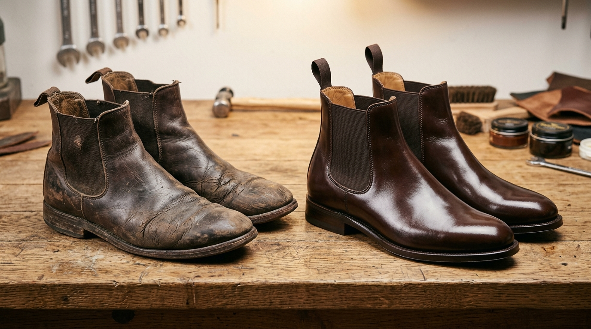
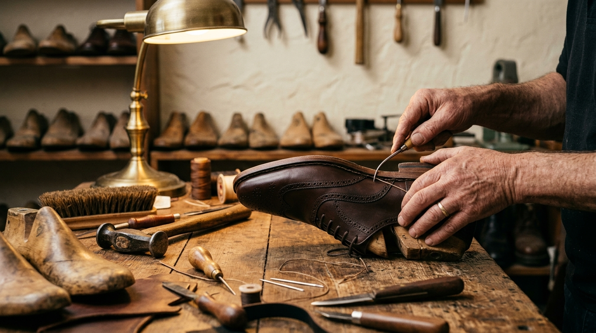
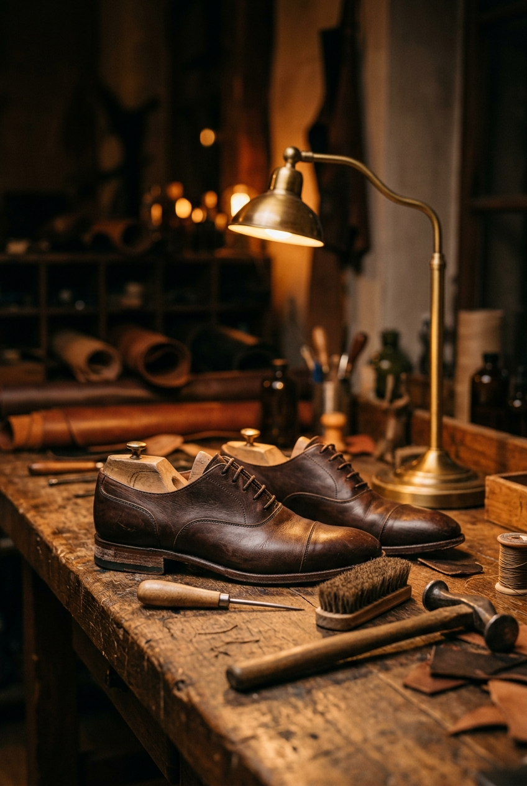
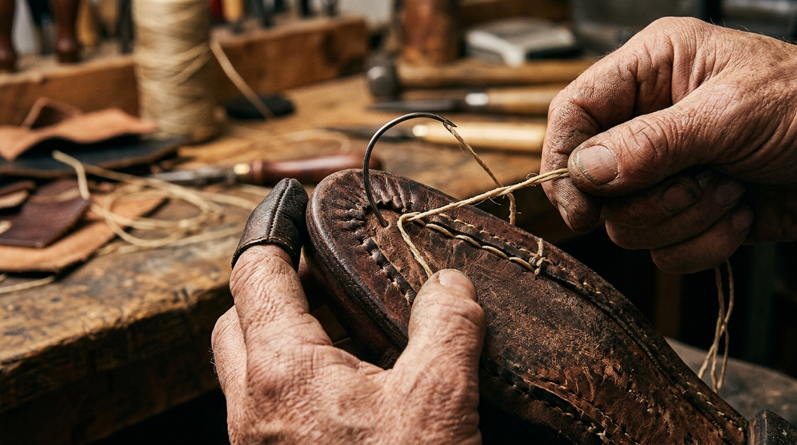
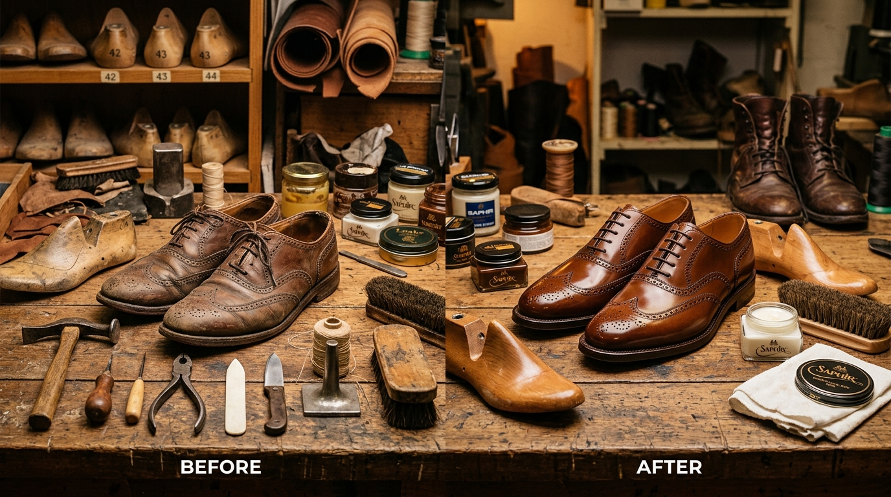

What We Offer
A full range of professional shoe repair services — from sole replacement to leather restoration, stitching, hardware repair and more.
The foundation of your shoe. We replace worn, damaged or delaminated soles with materials suited to the shoe construction and intended use.

Repair of the forefoot or heel area only, where the rest of the sole is structurally sound. Avoids full replacement when unnecessary.

Full rubber sole replacement for casual shoes, boots and work footwear. Durable, flexible and suited to active daily wear.

Full leather sole replacement for dress and formal footwear. Finished with edge bevelling and burnishing for an authentic handmade appearance.
A worn or damaged heel affects how you walk and how the shoe wears. We restore stability, height and structure to heels of all types.

Replacement of the rubber or plastic heel tip that protects the heel block. Worn tips cause clicking sounds and rapid heel block deterioration.

When the heel block itself has worn down unevenly, we rebuild it to its original height and shape using stacked leather or rubber lifts.

Internal or external reinforcement of the heel structure to prevent future collapse or misalignment, particularly on high-heel and wedge footwear.
Leather requires ongoing care to remain supple, retain its colour and resist cracking. We offer everything from a simple clean to a full colour restoration.

Professional cleaning removes dirt, salt, moisture residue and surface build-up that regular wiping cannot address while protecting the leather finish.

Deep conditioning treatment restores moisture to dry leather, helps prevent cracking and improves flexibility and softness throughout the upper.

Colour refresh and restoration for faded leather using professional dyes. Scuffs, fade lines and colour inconsistency addressed throughout.

A deep shine finish for dress shoes and formal footwear. Multiple layers of wax polish are applied and buffed to a smooth, even mirror finish across the toe.
Structural integrity depends on the quality of the stitching. We repair torn seams, reinforce failing thread and address any stitching that compromises the shoe's hold.

Repair of torn or open seams anywhere on the upper, including the vamp, quarter and heel seam. Thread is matched to the original weight and colour where possible.

Preventive reinforcement of seams that are showing early signs of failure — before they open completely. Recommended for high-wear footwear.
Uncomfortable shoes do not have to be discarded. We can apply controlled stretching to address width discomfort and pressure points — with honest guidance on what is achievable.

Using professional shoe stretching equipment, we can increase width across the ball of the foot area. Results vary based on leather type and shoe construction. We do not guarantee exact dimensions.

Targeted softening of specific pressure areas — bunion zones, toe box and instep — for localised comfort without changing the overall fit. Each adjustment is guided by the shoe's leather and construction.
Protective treatment to help repel water and reduce the effects of rain, mud and moisture on leather and suede footwear. Results depend on material and treatment type.

Surface preparation followed by professional water-repellent spray or wax application. Helps reduce water absorption and light rain damage on leather and suede footwear.

A combination of conditioning and protective wax application — particularly suited to leather boots and work footwear that sees regular outdoor exposure.
Also Available
Beyond our core repairs, we offer a range of specialist services for hardware, accessories and general footwear care.
Full zipper replacement or slider repair on boots, ankle boots and leather footwear, with matching hardware where possible.
Replacement of broken or corroded metal buckles on straps, monk-strap shoes and boots.
Replacement or reinforcement of eyelets and lace holes that have pulled or torn through the upper.
Replacement of damaged elastic side panels on Chelsea and ankle boots, restoring a secure and comfortable fit.
Removal of old insoles and fitting of replacement foam, leather or orthopaedic-style insoles.
Professional hand cleaning service for leather, suede and fabric footwear. Safe for delicate materials.
Minor leather bag and belt repairs including stitching, hardware and strap replacement where materials allow.
Loose counters, collapsed toe boxes and internal structural issues addressed on a case-by-case basis.
Proven Results
Drag the sliders to inspect real repair outcomes from our studio. Every pair brought to us receives individual artisan care.


Not Sure What You Need?
Our standard assessment is free. Drop off your footwear and we will provide an honest diagnosis and estimate before any work begins.